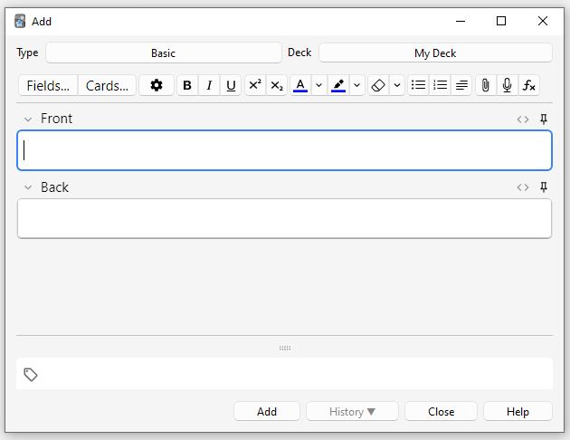

カードとノートの追加/編集
- カードとノートの追加
- ノートタイプの追加
- フィールドのカスタマイズ
- デッキ/ノートタイプの変更
- コンテンツの整理
- 編集機能
- 穴埋め削除
- 画像オクルージョン
- IOノートの編集
- 非ラテン文字とアクセントの入力
- Unicode正規化
カードとノートの追加
基本編で説明したように、Ankiではカードではなくノートを追加し、Ankiが自動的にカードを作成します。メインウィンドウで追加をクリックすると、ノート追加ウィンドウが表示されます。

ウィンドウの左上には現在のノートタイプが表示されます。「基本」と表示されていない場合は、共有デッキをダウンロードした際にノートタイプが追加された可能性があります。以下の説明では「基本」が選択されていることを前提としています。
ウィンドウの右上にはカードが追加されるデッキが表示されます。新しいデッキにカードを追加したい場合は、デッキ名のボタンをクリックして追加をクリックします。
ノートタイプの下にはいくつかのボタンと、「表面」と「裏面」というラベルの付いたエリアがあります。表面と裏面はフィールドと呼ばれ、上部の「フィールド…」ボタンをクリックすることで追加、削除、名前変更ができます。
フィールドの下には「タグ」というラベルの付いたエリアがあります。タグはノートに付けることができるラベルで、ノートの整理や検索を容易にします。タグは空白のままでも構いませんし、1つ以上追加することもできます。タグはスペースで区切ります。タグエリアに以下のように入力した場合：
vocab check_with_tutor
追加するノートには2つのタグが付きます。
表面と裏面にテキストを入力したら、「追加」ボタンをクリックするか、Ctrl+Enter（MacではCommand+Enter）を押してノートをコレクションに追加できます。これによりカードも作成され、選択したデッキに配置されます。追加したカードを編集したい場合は、履歴ボタンをクリックしてブラウザで最近追加したカードを検索できます。
ノートタイプとフィールドの間にあるボタンの詳細については、エディタのセクションをご覧ください。
重複チェック
Ankiは最初のフィールドの一意性をチェックするため、例えば「apple」という表面フィールドを持つカードを2枚入力すると警告が表示されます。一意性チェックは現在のノートタイプに限定されるため、複数の言語を学習している場合、各言語に異なるノートタイプがあれば、同じ表面を持つ2枚のカードは重複として表示されません。
効率性の理由から、Ankiは他のフィールドでの重複を自動的にチェックしませんが、ブラウザには「重複を検索」機能があり、定期的に実行できます。
効果的な学習
人によって復習方法の好みは異なりますが、心に留めておくべき一般的な概念があります。優れた入門記事として、SuperMemoサイトのこの記事があります。特に重要な点：
-
シンプルに保つ: カードが短いほど、復習が簡単になります。「念のため」多くの情報を含めたくなるかもしれませんが、復習はすぐに苦痛になります。
-
理解なしに暗記しない: 言語を学習している場合、大量の単語リストは避けるようにしましょう。言語学習の最良の方法は文脈の中で学ぶことで、つまり文章の中で使われている単語を見ることです。同様に、コンピュータコースを学習している場合を想像してください。山のような略語を暗記しようとすると、進歩するのが非常に困難になります。しかし、略語の背後にある概念を理解する時間を取れば、略語の学習がずっと簡単になります。
ノートタイプの追加
基本的なノートタイプは表裏に単語やフレーズだけがある単純なカードには十分ですが、表面や裏面に複数の情報を含めたくなったら、その情報をより多くのフィールドに分割するのが良いでしょう。
「でも私はカードを1枚だけ欲しいので、なぜ音声、画像、ヒント、翻訳をすべて表面フィールドに含められないのか？」と思うかもしれません。そうしたければ、それでも構いません。しかし、そのアプローチの欠点は、すべての情報が一緒になってしまうことです。ヒントでカードをソートしたい場合、他のコンテンツと混在しているためできません。また、音声を表面から裏面に移動させるなどのことも、すべてのノートに対して手作業でコピー＆ペーストする以外にはできません。コンテンツを別々のフィールドに保つことで、将来カードのレイアウトを調整することがずっと簡単になります。
新しいタイプのノートを作成するには、メインのAnkiウィンドウからツール → ノートタイプを管理を選択します。次に「追加」をクリックして新しいタイプのノートを追加します。新しいタイプのベースとなるノートタイプを選択する画面が表示されます。「追加」はAnkiに付属するタイプをベースに新しく作成されたタイプを作ることを意味します。「複製」は既にコレクションにあるタイプをベースに新しく作成されたタイプを作ることを意味します。例えば、既にフランス語の語彙タイプを作成していた場合、ドイツ語の語彙タイプを作成する際にそれを複製したいかもしれません。
OKを選択した後、新しいタイプに名前を付けるよう求められます。学習している教材名を選ぶのが良いでしょう - 「日本語」、「雑学」などです。名前を選んだら、ノートタイプウィンドウを閉じると、追加ウィンドウに戻ります。
フィールドのカスタマイズ
フィールドをカスタマイズするには、ノートの追加または編集時に「フィールド…」ボタンをクリックするか、ノートタイプを管理ウィンドウでノートタイプが選択されている時にクリックします。

適切なボタンをクリックすることで、フィールドの追加、削除、名前変更ができます。
このダイアログとノート追加ダイアログでフィールドが表示される順序を変更するには、位置変更ボタンを使用できます。これは、フィールドを配置したい数値の位置を尋ねます。したがって、フィールドを新しい最初のフィールドにしたい場合は、「1」と入力します。
または、フィールド名をドラッグ＆ドロップして並べ替えることもできます。これを行うには、マウスまたは指を使ってフィールドを目的の位置にドラッグします。インジケーターがフィールドの移動先を表示します。
「Tags」、「Type」、「Deck」、「Card」、「FrontSide」をフィールド名として使用しないでください。これらは特殊フィールドであり、正しく機能しません。
画面下部のオプションでは、カードの追加と編集時に使用されるフィールドのさまざまなプロパティを編集できます。これは復習時にカードに表示される内容をカスタマイズする場所ではありません。それについてはテンプレートをご覧ください。
-
編集フォントでは、ノート編集時に使用するフォントとサイズをカスタマイズできます。これは重要でない情報を小さくしたり、読みにくい非ラテン文字のサイズを大きくしたりするのに便利です。ここで行った変更は復習時のカードの表示には影響しません。それを行うにはテンプレートセクションをご覧ください。ただし、「答えを入力する」機能を有効にしている場合、入力するテキストはここで定義されたフォントサイズを使用します。（答えを入力する際の実際のフォント書体を変更する方法については、解答の確認セクションをご覧ください。）
-
**このフィールドでソート…**は、Ankiにブラウザのソートフィールド列にこのフィールドを表示するよう指示します。これを使用して、そのフィールドでカードをソートできます。一度に1つのフィールドのみがソートフィールドになることができます。
-
テキスト方向を逆にするは、アラビア語やヘブライ語など、右から左（RTL）にテキストを表示する言語を学習している場合に便利です。この設定は現在編集のみを制御します。復習中にテキストが正しく表示されるようにするには、テンプレートを調整する必要があります。
-
デフォルトでHTMLエディタを使用は、フィールドを直接HTMLで編集することを好む場合に便利です。
-
デフォルトで折りたたむ。フィールドは折りたたみ/展開できます。アニメーションは設定で無効にできます。
-
**限定されていない検索から除外（遅い）**は、特定のフィールドの内容を特定のフィールドに限定されていない検索に表示したくない場合に使用できます。
フィールドを追加した後は、おそらくカードの表面または裏面に追加したいでしょう。詳細については、テンプレートセクションをご覧ください。
デッキ/ノートタイプの変更
追加中に、左上のボタンをクリックしてノートタイプを変更し、右上のボタンをクリックしてデッキを変更できます。開くウィンドウでは、デッキやノートタイプを選択するだけでなく、新しいデッキを追加したり、ノートタイプを管理したりすることもできます。
コンテンツの整理
デッキの適切な使用
デッキは、英語、地理など、個別に学習したい大まかなカテゴリーにコンテンツを分割するように設計されています。「私の地理の教科書第1章」や「食べ物に関する動詞」など、多くの小さなデッキを作成してコンテンツを整理したくなるかもしれませんが、以下の理由から推奨されません：
-
多くの小さなデッキは、認識可能な順序でカードを見ることになる可能性があります。古いスケジューラーバージョンでは、新しいカードはデッキの順序でしか導入できません。そして、各デッキを順番にクリックすることを計画していた場合（これは遅い）、すべての「第1章」や「食べ物の動詞」の復習を一緒に見ることになります。これにより、文脈から推測できるため、カードに答えるのが簡単になり、記憶が弱くなります。Anki以外で単語やフレーズを思い出す必要がある場合、常に関連するコンテンツが最初に表示される贅沢はありません！
-
以前のAnkiバージョンほど問題ではありませんが、何百ものデッキを追加すると速度低下を引き起こす可能性があり、数千のアイテムを持つ非常に大きなデッキツリーは、Anki 2.1.50より前のバージョンでデッキリストの表示を実際に壊す可能性があります。
タグの使用
多くの小さなデッキを作成する代わりに、タグやフィールドを使用してコンテンツを分類するのが良いアイデアです。タグは検索結果を向上させ、特定のコンテンツを見つけ、コレクションを整理するのに便利な方法です。タグとフラグを効果的に使用する方法は多くあり、それらをどのように使用したいかを事前に考えることで、何が最適かを決定するのに役立ちます。
一部の人々はカードを整理するためにデッキとサブデッキを使用することを好みますが、タグを使用することにはデッキよりも大きな利点があります：単一のノートに複数のタグを追加できますが、単一のカードは1つのデッキにしか属することができないため、ほとんどの場合、タグはデッキよりも強力で柔軟な分類システムになります。また、デッキと同じようにタグをツリー状に整理することもできます。
例えば、「食べ物の動詞」デッキを作成する代わりに、それらのカードをメインの言語学習デッキに追加し、「食べ物」と「動詞」でタグ付けすることができます。各カードには複数のタグを付けることができるため、すべての動詞、すべての食べ物関連の語彙、または食べ物に関連するすべての動詞を検索するなどのことができます。
編集ウィンドウとブラウザからタグを追加でき、そこでタグの追加、削除、名前変更、整理もできます。タグはノートレベルで機能することに注意してください。つまり、兄弟カードを持つカードにタグを付けると、すべての兄弟カードもタグ付けされます。単一のカードにタグを付けたいが、その兄弟カードにはタグを付けたくない場合は、代わりにフラグの使用を検討してください。
フラグの使用
フラグはタグに似ていますが、学習中の復習ウィンドウに表示され、画面の右上に色付きのフラグアイコンが表示されます。ブラウズ画面でフラグ付きカードを検索したり、ブラウザからフラグの名前を変更したり、フラグ付きカードからフィルターデッキを作成したりすることもできますが、タグとは異なり、単一のカードは一度に1つのフラグしか持つことができません。もう1つの重要な違いは、フラグはカードレベルで機能するため、兄弟カードを持つカードにフラグを付けても、カードの兄弟には影響しません。
復習モード中に直接カードにフラグを付ける/解除することができます（WindowsではCTRL + 1-7、MacではCMD + 1-7を押す）。また、ブラウザからも可能です。
「marked」タグ
Ankiは「marked」というタグを特別に扱います。学習画面とブラウズ画面には「marked」タグを追加および削除するオプションがあります。学習画面では、現在のカードのノートにそのタグがある場合、星が表示されます。そして、ノートがマークされている場合、ブラウズ画面でカードは異なる色で表示されます。
注：マーキングは主に古いAnkiバージョンとの互換性のために残されています。ほとんどのユーザーは代わりにフラグを使用したいでしょう。
フィールドの使用
非常に整理された状態を保ちたい人のために、「本」、「ページ」などのフィールドをノートに追加してコンテンツを分類できます。Ankiは特定のフィールドでの検索をサポートしているため、"book:my book" page:63のような検索を行い、すぐに探しているものを見つけることができます。
カスタム学習とフィルターデッキ
カスタム学習とフィルターデッキを使用して、検索条件から一時的なデッキを作成できます。これにより、ほとんどの時間コンテンツを単一のデッキで混ぜて復習できます（最適な記憶のため）が、テスト前など特定の教材に集中する必要がある時に一時的なデッキを作成することもできます。一般的なルールは、常に一部のコンテンツを個別に学習できるようにしたい場合は、通常のデッキに入れるべきです。時々個別に学習する必要がある場合（テスト、バックログの時など）は、タグ、フラグ、マーク、またはフィールドから作成されたフィルターデッキの方が良いでしょう。
編集機能
エディタはノートの追加、復習中のノートの編集、またはブラウジング時に表示されます。

左上には2つのボタンがあり、フィールドとカードウィンドウを開きます。
右側には書式設定を制御するボタンがあります。太字、斜体、下線はワープロソフトと同じように機能します。次の2つのボタンでは、テキストを下付き文字または上付き文字にすることができ、H2Oのような化合物やx2のような簡単な数式に便利です。次に、テキストの色を変更できる2つのボタンがあります。
消しゴムボタンは、現在選択されているテキストのすべての書式設定をクリアします - テキストの色、選択されたテキストが太字かどうかなどを含みます。次の3つのボタンでは、リストの作成、テキストの配置、テキストのインデントができます。
クリップボタンを使用して、コンピュータのハードドライブから音声、画像、ビデオを選択してノートに添付できます。または、メディアをコンピュータのクリップボードにコピーして（例えば、ウェブ上の画像を右クリックして「画像をコピー」を選択）、配置したいフィールドに貼り付けることもできます。メディアの詳細については、メディアセクションをご覧ください。
マイクアイコンを使用すると、コンピュータのマイクから録音してノートに添付できます。
FxボタンはMathJaxやLaTeXをノートに追加するためのショートカットを表示します。
[…]ボタンは、穴埋め問題ノートタイプが選択されている時に表示されます。

</>ボタンでは、フィールドの基になるHTMLを編集できます。

Anki 2.1.45以降では、編集画面から直接固定フィールドを調整できます。フィールドの右側にあるピンアイコンをクリックすると、ノートが追加された後もAnkiはフィールドの内容をクリアしません。複数のノートに同じコンテンツを入力している場合、これが便利かもしれません。以前のAnkiバージョンでは、固定フィールドはフィールド画面から切り替えられました。

ほとんどのボタンにはショートカットキーがあります。ボタンの上にマウスカーソルを合わせると、そのショートカットを確認できます。
テキストを貼り付ける時、Ankiはデフォルトでほとんどの書式設定を保持します。貼り付け中にShiftキーを押している場合、Ankiはほとんどの書式設定を削除します。設定では、「Shiftキーなしの貼り付けで書式設定を削除」を切り替えて、デフォルトの動作を変更できます。
穴埋め削除
_穴埋め削除_は、文中の1つ以上の単語を隠すプロセスです。例えば、次の文があるとします：
キャンベラは1913年に設立されました。
「1913」に穴埋め削除を作成すると、文は次のようになります：
キャンベラは[...]に設立されました。
このように削除された部分は「隠蔽された」と言われることがあります。
穴埋め削除を使用する理由の詳細については、こちらのルール5をご覧ください。
Ankiは穴埋め削除を簡単に作成できるように、特別な穴埋め削除タイプのノートを提供しています。穴埋め削除ノートを作成するには、穴埋めノートタイプを選択し、「テキスト」フィールドにテキストを入力します。次に、隠したいテキストの上でマウスをドラッグして選択し、[…]ボタンをクリックします。Ankiはテキストを次のように置き換えます：
キャンベラは{{c1::1913}}年に設立されました。
「c1」の部分は、文に1つの穴埋め削除を作成したことを意味します。必要に応じて複数の削除を作成できます。例えば、キャンベラを選択して再度[…]をクリックすると、テキストは次のようになります：
{{c2::キャンベラ}}は{{c1::1913}}年に設立されました。
上記のノートを追加すると、Ankiは2枚のカードを作成します。最初のカードの質問には次が表示されます：
キャンベラは[...]年に設立されました。
完全な文が答えに表示されます。もう1枚のカードの質問には次が表示されます：
[...]は1913年に設立されました。
同じカードで複数のセクションを省略することもできます。上記の例で、c2をc1に変更すると、キャンベラと1913の両方が隠された1枚のカードのみが作成されます。穴埋めを作成する際にAlt（MacではOption）を押している場合、Ankiは自動的に番号を増やさずに同じ番号を使用します。
穴埋め削除は単語の境界に落ちる必要はないため、上記の例で「キャンベラ」ではなく「ャンベラ」を選択した場合、質問は「キ[…]は1913年に設立されました」と表示され、ヒントが与えられます。
テキストと一致しないヒントを自分に与えることもできます。元の文を次のように置き換えた場合：
キャンベラ::都市は1913年に設立されました
「キャンベラ::都市」を選択した後に[…]を押すと、Ankiは2つのコロンの後のテキストをヒントとして扱い、テキストを次のように変更します：
{{c1::キャンベラ::都市}}は1913年に設立されました
カードが復習に出てきた時、次のように表示されます：
[都市]は1913年に設立されました。
穴埋め削除に正しく入力する能力をテストする方法については、解答の入力のセクションをご覧ください。
バージョン2.1.56から、ネストされた穴埋め削除がサポートされています。例えば、以下は有効です：
{{c1::キャンベラは{{c2::設立されました}}}}1913年に
内側の穴埋めは外側の中に完全にネストされています。部分的な重複はサポートされていません。例えば：
[...]設立されました1913年に -> キャンベラは
キャンベラ[...]1913年に -> は設立されました
「は」という単語が両方の削除に表示されます。
現在の実装では、限られた量のネストしか処理できません。Anki 24.11では、3レベルまでです。他のバージョンでは、制限は約8ですが、制限に近づくとAnkiが遅くなる可能性があります。制限を拡張することはできません。この機能を使用する場合は、数レベルのネストに制限することをお勧めします。
バージョン2.1.56より前では、重複するテキストから穴埋めを作成する必要がある場合は、穴埋めに別のテキストフィールドを追加し、テンプレートに追加してから、ノートを作成する時にテキストを2つの別々のフィールドに貼り付けます：
テキスト1フィールド: {{c1::キャンベラは設立されました}}1913年に
テキスト2フィールド: {{c2::キャンベラ}}は1913年に設立されました
デフォルトの穴埋めノートタイプには、各カードの答え側に表示される「その他」という2番目のフィールドがあります。使用上の注意や追加情報を追加するために使用できます。
穴埋めノートタイプはAnkiによって特別に扱われ、通常のノートタイプに基づいて作成することはできません。カスタマイズしたい場合は、別のタイプのノートではなく、既存の穴埋めタイプを複製してください。書式設定などはカスタマイズできますが、穴埋めノートタイプに追加のカードテンプレートを追加することはできません。
画像オクルージョン
Anki 23.10以降は画像オクルージョンカードをネイティブでサポートしています。画像オクルージョン（IO）ノートは、テキストではなく画像に基づく穴埋め削除の特殊なケースで、画像の一部を隠すカードを作成し、その隠された情報についての知識をテストできます。

画像の追加
コレクションにIOカードを追加するには、追加画面を開き、「タイプ」をクリックして、組み込みのノートタイプのリストから「画像オクルージョン」を選択します。次に、「画像を選択」をクリックしてコンピュータのハードドライブに保存されている画像ファイルを読み込むか、クリップボードに画像がコピーされている場合は「クリップボードから画像を貼り付け」をクリックします。
IOカードの追加
画像を読み込んだ後、IOエディタが開きます。左側のアイコンをクリックして、画像に必要なだけエリアを追加します。選択できる基本的な形状は3つあります：
- 長方形
- 楕円
- 多角形
各ノートに対して2つの異なるIOモードから選択することもできます：
- すべて隠して1つずつ推測: すべてのエリアが隠され、学習中は一度に1つのエリアのみが表示されます。
- 1つ隠して1つ推測: 一度に1つのエリアのみが隠され、学習中に表示されます。他のエリアは表示されます。

デフォルトのIOノートタイプには標準フィールドもあります： ヘッダー（各カードの表面と裏面の画像の上に表示）、 裏面追加（各カードの裏面の画像の下に表示）、 コメント（カードには表示されません）。IOエディタからこれらにアクセスするには、マスクエディタを切り替えるボタンをクリックします。 そこでノートのタグも表示および編集できます。
完了したら、画面下部の「追加」ボタンをクリックします。Ankiは前のステップで追加した各形状または形状のグループに対してカードを追加し、通常どおり復習を開始できます。
IOノートの編集
復習中に「編集」をクリックするか、ブラウザから直接IOノートを編集できます。使用できるツールがいくつかあります。特に重要なもの：
- 選択：1つ以上の形状を選択して、移動、サイズ変更、削除、またはグループ化できます。
- ズーム：画像を自由に移動し、マウスホイールを使用してズームイン/アウトできます。
- 形状（長方形、楕円、多角形）：新しい形状/カードを追加するために使用します。
- テキスト：画像にテキストエリアを追加します。これらのテキストエリアは移動、サイズ変更、削除できますが、このツールを使用してもカードは作成されません。
- 元に戻す/やり直し。
- ズームイン/アウト - ズームをリセット。
- 半透明を切り替える：このツールを使用して、隠されたエリアを一時的に表示します。
- 削除：このツールを使用して、選択した形状とテキストエリアを削除します。形状を削除しても、関連するカードは自動的に削除されないことに注意してください。通常の穴埋め削除と同様に、その後ツール>空のカードを使用する必要があります。
- 複製。
- 選択をグループ化：このツールを使用して形状のクラスターを作成し、同時に移動、サイズ変更、削除できるようにします。2つ以上の単一の形状がグループ化されると、1枚のカードのみが作成されることに注意してください。
- 選択のグループ化を解除：グループを選択してこのボタンをクリックすると、各形状が再び独立します。
- 配置：このツールを使用して、形状/テキストエリアを希望どおりに配置できます。
IOカードの復習中、画像のすぐ下に「マスクを切り替える」ボタンが表示されます。このボタンは、「すべて隠して1つずつ推測」モードを使用している時に、ノートのすべての形状を一時的にクリアします。
非ラテン文字とアクセントの入力
すべての現代のコンピュータには、アクセントと非ラテン文字を入力するための組み込みサポートがあり、それを行う複数の方法があります。推奨する方法は、学習したい言語のキーボードレイアウトを使用することです。
日本語、中国語、タイ語などの別の文字体系を持つ言語には、その言語に固有のレイアウトがあります。
アクセントを使用するヨーロッパ言語には独自のレイアウトがある場合がありますが、多くの場合、汎用の「国際キーボード」レイアウトで入力できます。これらは、アクセントを入力してから、アクセントを付けたい文字を入力することで機能します - 例えば、アポストロフィ（´）の後に文字a（a）でáになります。
国際キーボードレイアウトの追加
国際キーボードの使用方法は、使用しているオペレーティングシステムとデスクトップ環境によって異なります。開始するには、以下のリンクをご覧ください。
Windows:
Mac:
Linux:
- Gnome: https://help.gnome.org/users/gnome-help/stable/tips-specialchars.html.en
- KDE Plasma: https://userbase.kde.org/Tutorials/ComposeKey
特定の言語のキーボードレイアウトの追加
特定の言語のキーボードは同様の方法で追加されますが、ここですべてをカバーすることはできません。詳細については、「Macで日本語を入力」、「Windows 10で中国語を入力」などでインターネット検索してみてください。
Linuxの場合は、ディストリビューションのWikiページを見るのが最善です。例えば
Arch Linuxと
Debian Linux。
例として、Debianでapt install ibus-anthyを実行すると、ひらがな文字を入力できるようになります。
右から左へ書く言語
右から左へ書く言語を学習している場合、考慮すべきことが他にもたくさんあります。詳細についてはこのページをご覧ください。
制限事項
Ankiが構築されているツールキットは、macOSでキーを押し続けてアクセント付き文字を選択する方法や、WindowsでAltキーを押しながら数字コードを入力して文字を入力する方法など、いくつかの入力方法で問題があります。
Unicode正規化
áのようなテキストは、コンピュータ上で複数の方法で表現できます。例えば、その記号の特定のコードを使用したり、標準のaを使用してその上にアクセントの別のコードを使用したりできます。これにより、異なるソースからの入力を混在させたり、異なるコンピュータを使用したりする時に問題が発生します - コンピュータがキーボード入力を1つの形式で処理しているが、コンテンツが異なる形式で保存されている場合、最終結果が同じに見えても、検索時に一致しません。
コンテンツが検索で簡単に見つかるようにするため、Ankiはテキストを標準形式に正規化します。ほとんどのユーザーにとってこのプロセスは透過的ですが、古代日本語の記号のような特定の教材を学習している場合、正規化プロセスによってそれらがより現代的な同等物に変換される可能性があります。
文字の変種を保持したい場合、デバッグコンソールで以下を実行すると正規化がオフになります：
mw.col.conf["normalize_note_text"] = False
その後に追加されたコンテンツは変更されません。トレードオフは、オペレーティングシステムを切り替えたり、混在したソースからコンテンツを貼り付けたりする場合、コンテンツを検索するのが困難になる可能性があることです。